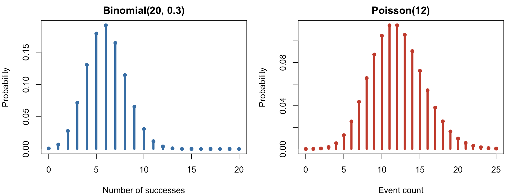
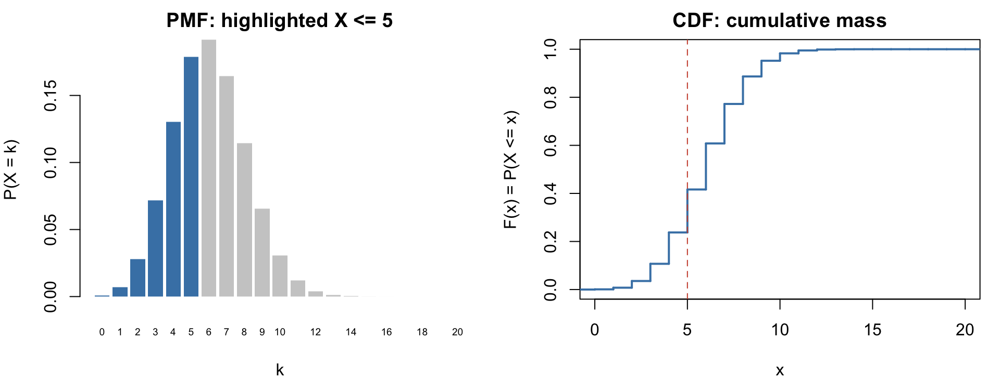
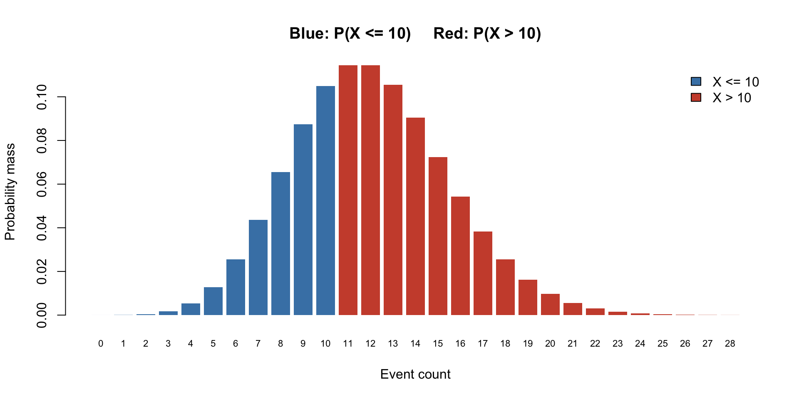
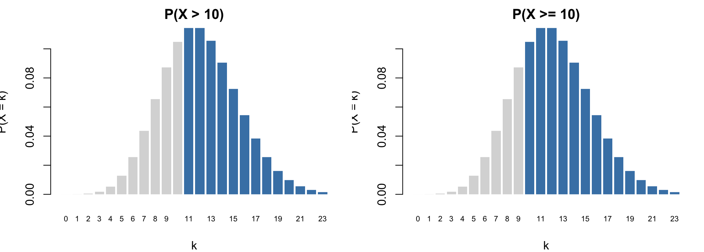
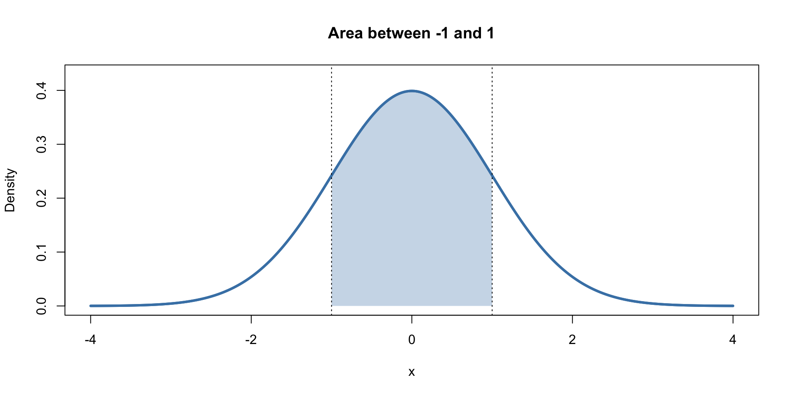
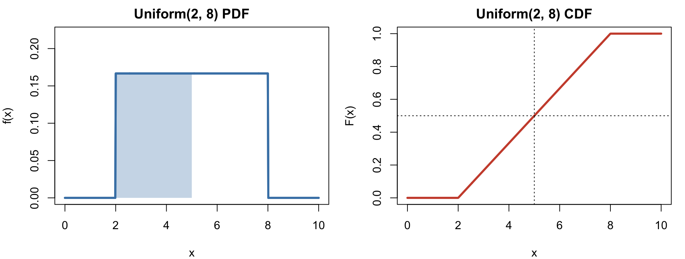
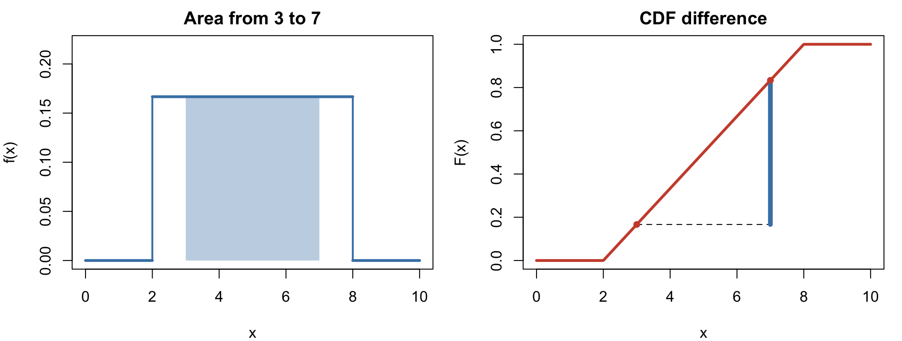
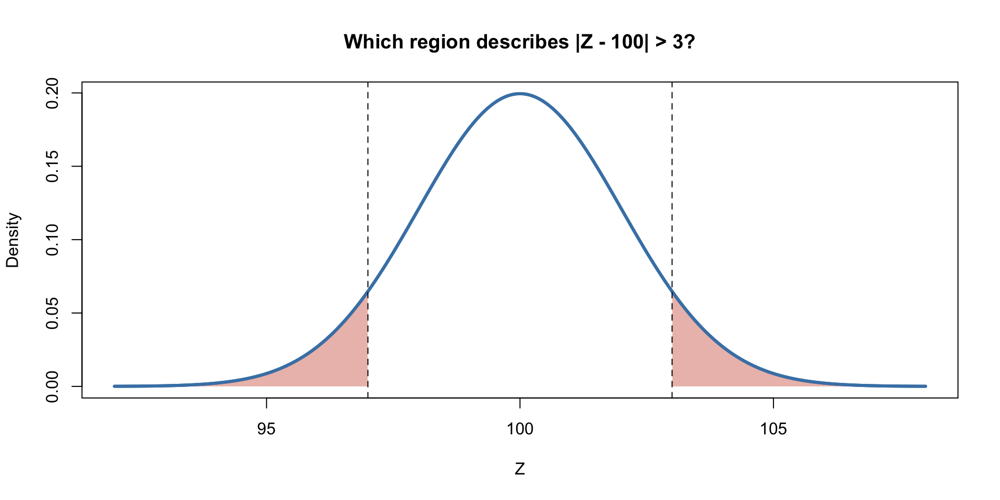

Computing probabilities in R
Today
We will use the cumulative distribution function (CDF) to compute probabilities in our familiar distribution families.
- In order to do this, you must be able to translate an event into an expression involving the CDF;
- Once you have done that, R provides the
p-functions for computing the CDF in the famous examples; - If a random variable is discrete, care must be taken about the endpoints of intervals. For continuous random variables it doesn’t matter.
Part 1: Discrete random variables
Review: discrete random variables
A random variable \(X\) is discrete if its range is finite or countably infinite.
. . .
Its probability mass function (PMF) is
\[ p_X(k) = \begin{cases} P(X=k) & k\in\text{Range}(X)\\ 0 & \text{else}, \end{cases} \]
which must satisfy:
\[p_X(k)\geq 0,\qquad \sum_{k\in\text{Range}(X)} p_X(k)=1.\]
. . .
To find the probability of an event, add the inidividual probabilities of all values in the event:
\[ P(X\in A)=\sum_{k\in A}p_X(k). \]
Pictures of two discrete PMFs
A PMF assigns probability mass to individual values.
The probability at a value is the height of its spike.
Three families we’ve met
We’ve begun studying famous parametric families of probability distributions:
| Distribution | Range | PMF: \(P(X=k)\) |
|---|---|---|
| \(X\sim\text{Binom}(n,\,p)\) | \(\{0,\,1,\,2,\,...,\,n\}\) | \(\binom{n}{k}p^k(1-p)^{n-k}\) |
| \(X\sim\text{Geom}(p)\) | \(\{1,\,2,\,3,\,...\}\) | \((1-p)^{k-1}p\) |
| \(X\sim\text{Poisson}(\lambda)\) | \(\mathbb{N}=\{0,\,1,\,2,\,3,\,...\}\) | \(e^{-\lambda}\frac{\lambda^k}{k!}\) |
You will see dozens more by the end of the semester.
The pdqr functions
R provides a standardized set of commands for working with each family of distributions:
- The
pcommand computes the CDF (today!); - The
dcommand computes the PMF; - The
qcommand computes the quantile functions (stay tuned!); - The
rcommand simulates random numbers from the distribution.
Review: binomial
If \(X\sim\operatorname{Binomial}(n,p)\), then
\[P(X=k)=\binom{n}{k}p^k(1-p)^{n-k}, \quad k=0,\ldots,n.\]
Think: \(n\) independent trials, each with success probability \(p\); \(X\) counts successes.
For example, if \(X\sim\operatorname{Binomial}(20,0.3)\):
dbinom(5, size = 20, prob = 0.3) # P(X = 5)[1] 0.1788631Review: Poisson
If \(X\sim\operatorname{Poisson}(\lambda)\), then
\[P(X=k)=e^{-\lambda}\frac{\lambda^k}{k!}, \quad k=0,1,2,\ldots.\]
\(X\) often counts arrivals, occurrences, or defects in a given window of time. \(\lambda>0\) is the mean count.
dpois(5, lambda = 12) # P(X = 5)[1] 0.01274064The CDF
Definition
For any random variable \(X\), its cumulative distribution function (CDF) is
\[F_X(x)=P(X\leq x).\]
For discrete \(X\), you get this by adding up (ie. accumulating) PMF values from left to right:
\[F_X(x)=P(X\in(-\infty,\,x]))=\sum_{k\leq x}P(X=k).\]
From masses to a CDF
The CDF accumulates the probability mass as the threshold increases.

The CDF jumps at possible outcomes; the size of each jump is the corresponding PMF value.
Example
For example, if \(X\sim\operatorname{Binomial}(20,0.3)\):
\[P(X\leq 5)=\sum_{k=0}^{5}P(X=k).\]
. . .
. . .
pbinom(5, size = 20, prob = 0.3)[1] 0.4163708Same answer!
Review: properties of every CDF
- (universality) every random variable has a CDF, and it uniquely characterizes the entire distribution;
- (nondecreasing) if \(a\leq b\), then \(F_X(a)\leq F_X(b)\);
- (right continuous) \(\lim_{x\to a^+}F_X(x)=F_X(a)\);
- (limits) \(F_X(x)\to 0\) as \(x\to-\infty\), and \(F_X(x)\to1\) as \(x\to\infty\);
- (computation) \(P(a<X\leq b)=F_X(b)-F_X(a)\), for \(a<b\).
. . .
For discrete random variables specifically, the CDF is piecewise constant (ie. a step function), and the size of the jump at \(x\) is \(P(X=x)\).
The p functions in R
R uses a common naming scheme for probability distributions:
| Family | PMF or PDF | CDF | Simulation |
|---|---|---|---|
| Binomial | dbinom() |
pbinom() |
rbinom() |
| Poisson | dpois() |
ppois() |
rpois() |
| Uniform | dunif() |
punif() |
runif() |
The p functions return \(P(X\leq x)\) (the lower tail) by default.
First calculation: a shortcut for summing masses
Let \(X\sim\operatorname{Binomial}(20,0.3)\). Compute \(P(X\leq5)\) using the PMF and then the CDF.
They give the same answer. pbinom(5, ...) evaluates the cumulative probability directly.
See the complement
For \(X\sim\operatorname{Poisson}(12)\), the event \(X>10\) is the unshaded remainder when \(X\leq10\) is shaded.

\[P(X>10)=1-F_X(10).\]
One formula, many probabilities
For any \(a<b\),
\[P(a<X\leq b)=F_X(b)-F_X(a).\]
And by the complement rule,
\[P(X>a)=1-F_X(a).\]
Warning: For a discrete random variable, \(P(X< a)\) and \(P(X\leq a)\) need not be equal.
Part 2: Translating probability statements
Your turn: Poisson probabilities
Let \(X\sim\operatorname{Poisson}(12)\). Using only the CDF, write an R expression for each probability:
- \(P(X\leq10)\)
- \(P(X>10)\)
- \(P(X<10)\)
- \(P(X\geq10)\)
- \(P(8\leq X\leq15)\)
- \(P(8<X<15)\)
- \(P(X = 8)\)
Solutions: Poisson probabilities
ppois(10, lambda = 12) # P(X <= 10)[1] 0.34722941 - ppois(10, lambda = 12) # P(X > 10)[1] 0.6527706ppois(9, lambda = 12) # P(X < 10)[1] 0.24239221 - ppois(9, lambda = 12) # P(X >= 10)[1] 0.7576078[1] 0.7549112[1] 0.6169968[1] 0.06552328Why 9 instead of 10? Why 7 instead of 8? We can move a strict inequality by one because a Poisson variable takes integer values.
Visualize the endpoints
For integer-valued \(X\), the two events below are not the same.

The only difference is the mass at \(X=10\).
Another way to compute upper tails
The function argument lower.tail = FALSE asks R for \(P(X>x)\).
# Two ways to compute P(X > 10)
1 - ppois(10, lambda = 12)[1] 0.6527706ppois(10, lambda = 12, lower.tail = FALSE)[1] 0.6527706These are mathematically equivalent. The second is often preferable for very small tail probabilities because it avoids subtracting a number extremely close to 1.
It still means \(P(X>10)\), not \(P(X\geq10)\).
Your turn: a binomial variable
Let \(Y\sim\operatorname{Binomial}(30,0.2)\).
Using only the CDF, write R expressions for:
- \(P(Y=4)\);
- \(P(Y\leq4)\);
- \(P(Y\geq4)\);
- \(P(3\leq Y<8)\).
Solutions: binomial probabilities
Part 3: Continuous random variables
Review: continuous random variables
An (absolutely) continuous random variable is described by a probability density function (PDF) \(f_X\) such that
\[f_X(x)\geq0,\qquad \int_{-\infty}^{\infty}f_X(x)\,dx=1.\]
Probabilities are areas under the density curve:
\[P(a<X<b)=\int_a^b f_X(x)\,dx.\]
NOTE: for discrete variables, we computed probabilities by summing over the PMF. For continuous, we integrate over the PDF. Same idea
Two crucial points
- If \(X\) is continuous, then \(P(X = x)=0\) for all \(x\in\mathbb{R}\);
- So the height of the density curve \(f_X(x)\) is not a probability. It’s a “density,” which is not an interpretable quantity.
What does a PDF represent?
A probability is an area, not the height of a density curve.

\[P(-1<Z<1)=F_Z(1)-F_Z(-1).\]
The continuous CDF
The definition has not changed:
\[F_X(x)=P(X\leq x).\]
For a continuous random variable with density \(f_X\),
\[F_X(x)=\int_{-\infty}^{x}f_X(t)\,\text{d}t.\]
Therefore,
\[P(a<X<b)=F_X(b)-F_X(a).\]
Back to the crucial point
Because individual points have zero probability, the strictness of the endpoints doesn’t matter for intervals:
\[P(a<X<b)=P(a\leq X\leq b).\]
Discrete versus continuous
| Probability statement | Integer-valued \(X\) | Continuous \(Y\) |
|---|---|---|
| \(P( X < 10)\) or \(P(Y<10)\) | \(F_X(9)\) | \(F_Y(10)\) |
| \(P(X\leq10)\) or \(P(Y\leq10)\) | \(F_X(10)\) | \(F_Y(10)\) |
| \(P(X=10)\) or \(P(Y=10)\) | May be positive | \(0\) |
| \(P(8<X<12)\) or \(P(8<Y<12)\) | \(F_X(11)-F_X(8)\) | \(F_Y(12)-F_Y(8)\) |
The definition of the CDF is the same. The endpoint bookkeeping is different.
The continuous uniform distribution
\(X\sim\operatorname{Uniform}(a,b)\) means that the density is constant between \(a\) and \(b\):
\[f_X(x)=\begin{cases}\dfrac{1}{b-a},&a\leq x\leq b,\\[4pt]0,&\text{otherwise.}\end{cases}\]
For \(a\leq x\leq b\), its CDF is
\[F_X(x)=\frac{x-a}{b-a}.\]
For example, if \(X\sim\operatorname{Uniform}(2,8)\):
punif(5, min = 2, max = 8) # P(X <= 5)[1] 0.5Uniform: density and CDF

The shaded area on the left equals the CDF’s height at \(x=5\) on the right.
Uniform probabilities are lengths
Let \(U\sim\operatorname{Uniform}(2,8)\). The total width is \(8-2=6\).
To calculate \(P(3<U<7)\), take the length of the desired interval divided by the total length:
\[P(3<U<7)=\frac{7-3}{8-2}=\frac{4}{6}.\]
Now compute the same probability using the CDF:
The agreement is not a coincidence: the difference of the CDF values is the area under the density between the endpoints.
Uniform: an interval probability, two pictures

\[P(3<U<7)=F_U(7)-F_U(3).\]
Don’t confuse d and p
For the continuous uniform family:
dunif(5, min = 2, max = 8) # Height of the density at 5[1] 0.1666667punif(5, min = 2, max = 8) # Area to the left of 5[1] 0.5The first number is not \(P(U=5)\); that probability is zero. The second is \(P(U\leq5)=1/2\).
Part 4: Translating probability statements — your turn
Exercise 1: uniform
Let \(U\sim\operatorname{Uniform}(2,8)\).
Using punif() and ordinary arithmetic, calculate:
- \(P(U\leq5)\);
- \(P(U>6)\);
- \(P(3<U<7)\);
- \(P(U=5)\).
Then check answers 1–3 by calculating the corresponding lengths as fractions of the total interval length.
Exercise 2: visualize before calculating
Let \(U\sim\operatorname{Uniform}(2,8)\). Sketch the region describing
\[P(U<3\text{ or }U>7)\]
before entering any R code. Then:
- Calculate the probability using two CDF values.
- Calculate it using lengths of intervals.
- Check your answer using the complement of \(P(3\leq U\leq7)\).

Exercise 3: choose your model
A factory makes components independently. Each component has probability \(0.04\) of being defective. An inspector tests 75 components.
- Specify a distribution for the number of defective components, including its parameters.
- Find the probability that at least five are defective.
- Find the probability that between two and six, inclusive, are defective.
Write the probability statement in mathematical notation before writing the R code.
Exercise 4: choose your model
Customers arrive at a shop according to a Poisson process at an average rate of 6 per hour.
- Specify a distribution for the number arriving in the next two hours.
- Find the probability of more than 15 arrivals.
- Find the probability of between 10 and 15 arrivals, inclusive.
- What would you change if the observation interval were 30 minutes?
Exercise 5: continuous uniform application
A bus arrives at a stop at a time uniformly distributed between 2:00 and 2:12 p.m. Let \(W\) denote the number of minutes after 2:00 when it arrives.
- Specify the distribution of \(W\).
- Find the probability that the bus arrives after 2:09.
- Find the probability that it arrives between 2:03 and 2:07.
- What is the probability that it arrives at exactly 2:06?
For 2 and 3, answer both geometrically and using punif().
Exercise 6: conditional probability (challenge)
Let \(X\sim\operatorname{Poisson}(12)\).
A researcher learns that at least 10 events occurred but doesn’t know the exact count. Find
\[P(X\geq15\mid X\geq10).\]
Write this as a ratio of two unconditional probabilities before evaluating it in R.
Before you leave
You should be able to:
Appendix: solutions to independent exercises
Exercise 1 solutions
Exercise 2 solutions
[1] 0.3333333(3 - 2) / 6 + (8 - 7) / 6[1] 0.3333333[1] 0.3333333All three calculations equal \(1/3\).
Exercise 3 solutions
\(D\sim\operatorname{Binomial}(75,0.04)\).
Exercise 4 solutions
For two hours, \(N\sim\operatorname{Poisson}(12)\).
For 30 minutes, use \(\lambda=3\) instead of \(\lambda=12\).
Exercise 5 solutions
\(W\sim\operatorname{Uniform}(0,12)\).
Geometrically, the relevant widths are 3 minutes and 4 minutes out of a 12-minute interval.
Exercise 6 solution
Because \(\{X\geq15\}\subseteq\{X\geq10\}\),
\[P(X\geq15\mid X\geq10)=\frac{P(X\geq15)}{P(X\geq10)}.\]